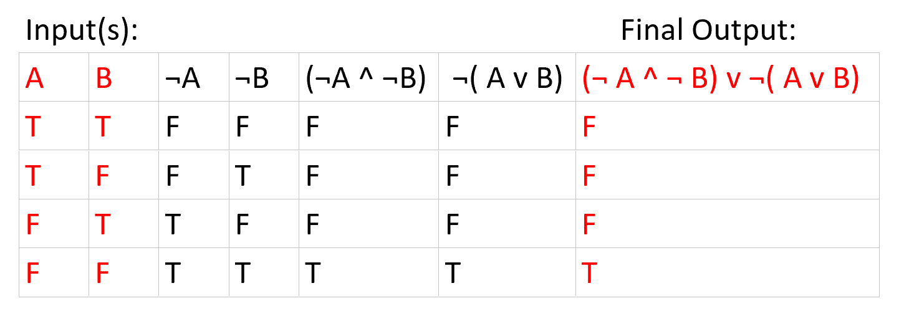
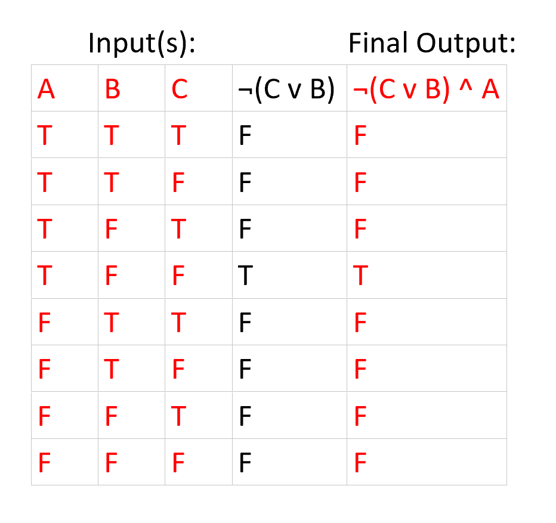

1. In an 8-bit binary number, which is the most significant bit (MSB)? Answer: The bit with the highest value place. Which is the bit farthest to the left (27 for 8-bit binary number). The MSB can also represent the sign on signed binary numbers. 2. What is the 8-bit binary (two’s-complement) representation of each of the following signed decimal integers? a. -72 Answer: 10111000 b. -272 Answer: Not Possible, Overflow (Needs 10 bits 1011110000) c. -77 Answer: 10110011 3. What is the sum of each pair of binary integers? a. 10101100 + 11111011 Answer: 110100111 b. 10010001 + 11100011 Answer: 101110100 c. 01100011 + 10010011 Answer: 11110110 4. Create a truth table to show all possible inputs and outputs for the Boolean functions described by a. (NOT A AND NOT B) OR NOT (A OR B) Answer: *Note* Intial Inputs and Final Output are Marked in Red  b. NOT(C OR B) AND A Answer: *Note* Intial Inputs and Final Output are Marked in Red  5. What is the minimum number of binary bits needed to represent each of the following unsigned decimal integers? a. 4095 Answer: 12 bits b. 65534 Answer: 16 bits c. 42319 Answer: 16 bits 6. What is the largest decimal value you can represent using an 87-bit unsigned integer? Answer: 287 - 1 7. Calculate the binary subtraction of the following: a. 11100000 – 00000111 Answer: 11011001 (discard carry out) b. 33 – 34 Answer: 1111111 c. 00000100 – 00000101 Answer: 11111111 8. What is the binary representation of the following hexadecimal numbers? a. 0126F9D4 Answer: 0000 0001 0010 0110 1111 1001 1101 0100 b. 6ACDFA95 Answer: 0110 1010 1100 1101 1111 1010 1001 0101 c. F69BDC2A Answer: 1111 0110 1001 1011 1101 1100 0010 1010